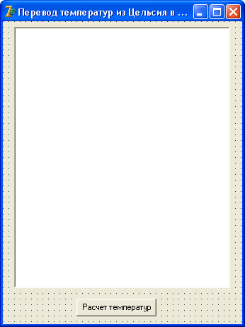

Цикл for
Еще один мощный инструмент в Delphi – циклы.
Эти циклы выполняют оператор или блок операторов заданное количество раз.
Синтаксис цикла for следующий:
for счетчик := нач_значение to кон_значение do оператор;
В расширенном варианте синтаксис такой:
for счетчик := нач_значение to кон_значение do begin оператор 1; оператор 2; … оператор n; end;
Здесь:
счетчик – переменная любого целого типа;
нач_значение – начальное значение счетчика;
кон_значение – конечное значение счетчика.
В качестве счетчиков используют обычно целые переменные.
Чтобы не тратить попусту оперативную память, счетчикам назначают тип Byte или Word, в зависимости от того, какое значение может оказаться у конечного значения.
В самом начале счетчик будет равен начальному значению.
Когда выполнятся все указанные операторы блока, управление вновь вернется к началу цикла.
Счетчик увеличится на единицу, и цикл будет выполнен снова.
И так далее, до тех пор, пока счетчик не станет равным конечному значению.
Давайте изучим цикл for на примере.
Пусть нам нужно перевести температуру от 0 до 100 градусов из шкалы Цельсия в шкалу Фаренгейта.
Правила здесь просты: нужно взять температуру по Цельсию, умножить ее на 9/5 и к результату прибавить 32.
Сам результат нужно будет программно добавить в компонент Memo в виде строки:
"x градусов по Цельсию = y градусов по Фаренгейту"
Создайте новое приложение.
Сразу же свойству Name формы присвойте имя fName.
В свойстве Caption напишите "Перевод температур из Цельсия в Фаренгейты".
Сохраните проект в новую папку.
В верхнюю часть окна поместите компонент Memo и в свойстве Lines удалите из него весь текст.
Растяните Memo по форме, как на рисунке:
Ниже Memo добавьте кнопку Button, в свойстве Caption которой укажите "Расчет температур".
Теперь создадим обработчик нажатия на кнопку, дважды щелкнув по ней.
Процедура выглядит так:
procedure TfName.Button1Click(Sender: TObject);
var
i : Byte; //счетчик
begin
for i := 0 to 100 do //делаем от 0 до 100
Memo1.Lines.Add(IntToStr(i) + ' градусов Цельсия = ' +
FloatToStr(CelToFar(i)) + ' Фаренгейта');
end;
Здесь следует обратить внимание на последний оператор.
Оператор
Memo1.Lines.Add('Строка');
добавляет строку 'Строка' в компонент Memo.
При этом, в качестве строки, мы использовали сложное выражение, формирующее строку из разных частей.
Разберем каждую часть подробно.
IntToStr(i)
в качестве результата вернет значение i (счетчика) в виде строки.
Как уже говорилось, это значение за каждый проход цикла будет увеличиваться на единицу.
То есть, в первом проходе i будет равна 0, во втором 1, и так далее, пока не станет равна 100.
Выполнив оператор в последний раз, цикл прекратит свою работу.
А мы каждый раз будем получать это число в виде строки.
Далее у нас идет строка
' градусов Цельсия = '
С помощью знака "+" (знак конкатенации) мы добавляем одну строку к другой.
В результате, при первом проходе мы получим строку
'0 градусов Цельсия = '
Обратите внимание, что во второй строке в начале и в конце есть пробелы.
Без пробела строки сольются: "0градусов Цельсия =", а это некрасиво.
Далее мы имеем строку
FloatToStr(CelToFar(i))
Функция FloatToStr() возвращает вещественное число в виде строки.
В качестве вещественного числа мы использовали вызов функции CelToFar(i), передав ей в качестве параметра целое число – текущее значение счетчика.
Функция использует это число, как градус Цельсия, преобразует его в Фаренгейт и вернет значение в виде вещественного числа.
Этой функции пока еще не существует, мы напишем ее позже.
В результате мы получим строку "0 градусов Цельсия = 32".
Далее мы добавляем еще строку
' Фаренгейта'
в результате чего получаем готовую строку "0 градусов Цельсия = 32 Фаренгейта".
И уже готовую строку с помощью метода Add() мы добавляем в компонент Memo.
Еще одно правило, которое можно увидеть из этого примера – если оператор получается длинным, его можно перенести на следующую строку после арифметического знака или запятой.
Функцию CelToFar() нужно будет создать выше нашей процедуры:
function CelToFar(a : Byte): Real; begin Result := a * 9/5 + 32; end;
Функция принимает параметр в виде целого числа, переводит его в Фаренгейты и возвращает в качестве результата, как вещественное число.
Наша программа готова.
Сохраните ее, скомпилируйте и посмотрите, как она работает.
Если у вас не умещается весь полученный текст в Memo, добавьте в компонент вертикальную полосу прокрутки.